טיפולוג היא מערכת לניהול קליניקה פרטית, המרכזת במקום אחד את כל העבודה השוטפת של מטפל/ת:
המערכת פועלת בדפדפן, בעברית ובכיוון ימין-לשמאל. התפריט הראשי נמצא בצד ימין של המסך בכל עמוד.
בעמוד ההתחברות הזינו אימייל וסיסמה ולחצו התחברות.
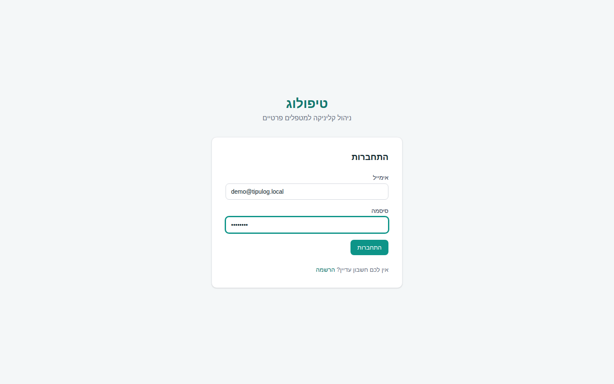
demo@tipulog.local והסיסמה demo1234.קישור התנתקות נמצא בתחתית התפריט הימני, מתחת לשם המטפל/ת.
לוח הבקרה הוא עמוד הבית של המערכת ומציג תמונת מצב יומית:
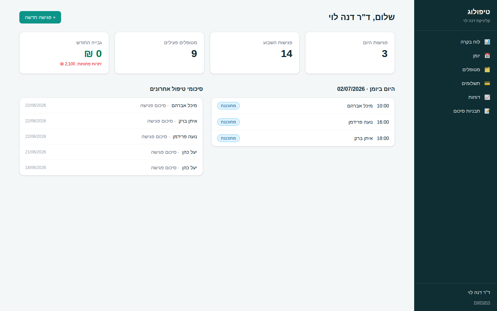
לחיצה על פגישה ברשימת "היום ביומן" פותחת את עמוד הפגישה; לחיצה על שורת סיכום ברשימת "סיכומי טיפול אחרונים" פותחת את לשונית הסיכומים בתיק המטופל.
בתפריט בחרו מטופלים. בעמוד מוצגת טבלת כל המטופלים, ומעליה שדה חיפוש לפי שם, טלפון או תעודת זהות (הקלידו ולחצו Enter).
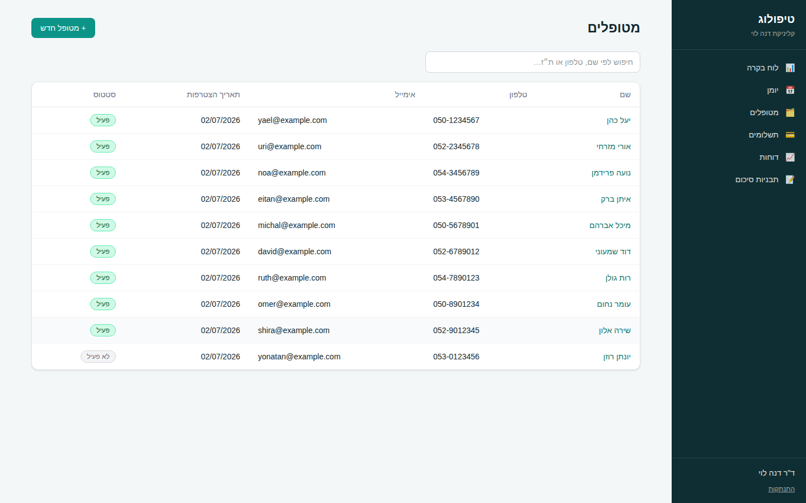
לחיצה על שם מטופל ברשימה פותחת את תיקו. בראש התיק מוצגים סטטוס, טלפון ויתרה לתשלום, וכן כפתור + קביעת פגישה. התיק מחולק לארבע לשוניות:
| לשונית | מה יש בה |
|---|---|
| פרטים אישיים | עריכת כל פרטי המטופל, כולל שינוי סטטוס לפעיל / לא פעיל. |
| פגישות | היסטוריית כל הפגישות עם תאריך, שעה, סוג, מחיר וסטטוס. לחיצה על תאריך פותחת את הפגישה. |
| סיכומי טיפול | כתיבת סיכום חדש (גם מתוך תבנית) וצפייה בכל הסיכומים הקודמים. |
| מסמכים | העלאת קבצים לתיק (הפניות, בדיקות, טפסים), הורדה ומחיקה. |
| תשלומים | סיכום חיובים / שולם / יתרה, קליטת תשלום חדש ורשימת כל הקבלות. |
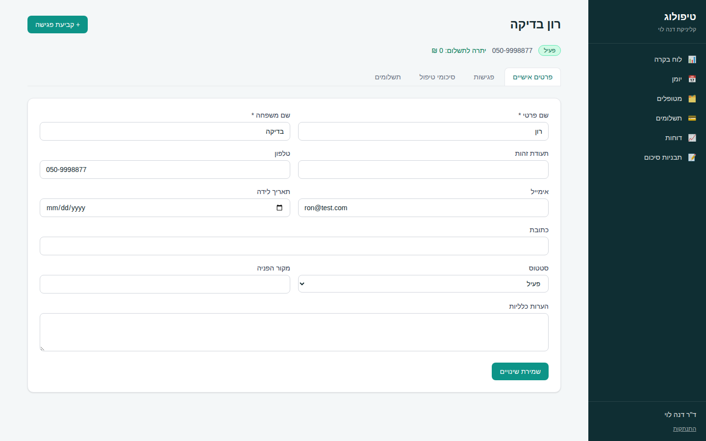
בתפריט בחרו יומן. היומן מציג שבוע מלא (ראשון עד שבת) בין השעות 07:00–20:00. היום הנוכחי מודגש בצבע. מעבר בין שבועות – בכפתורים שבוע קודם / השבוע / שבוע הבא.
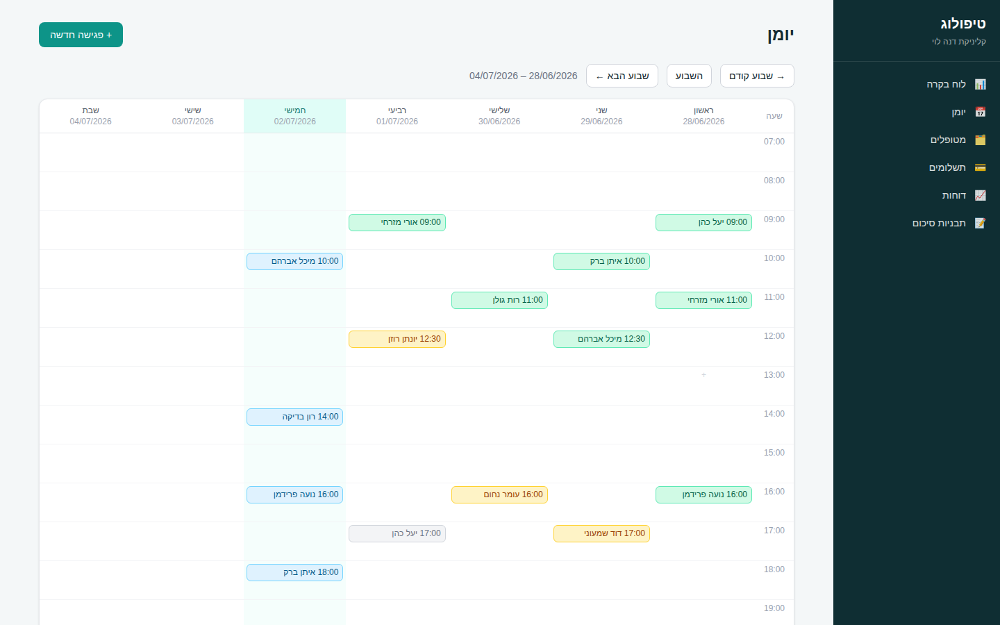
כל פגישה צבועה ביומן לפי מצבה:
| סטטוס | משמעות |
|---|---|
| מתוכננת | פגישה עתידית שטרם התקיימה. |
| התקיימה | הפגישה בוצעה – המחיר שלה מצטרף לחיובי המטופל. |
| בוטלה | הפגישה בוטלה ואינה מחויבת. |
| לא הגיע/ה | המטופל לא הגיע. אינה מחויבת (ניתן לחייב ידנית בעמוד הפגישה). |
לחיצה על פגישה ביומן פותחת את עמודה. בפגישה מתוכננת יופיעו כפתורי פעולה מהירים: ✓ סימון כהתקיימה, ביטול פגישה, לא הגיע/ה, וכן קיצורי דרך לכתיבת סיכום טיפול ולקליטת תשלום. בהמשך העמוד ניתן לערוך את כל פרטי הפגישה או למחוק אותה.
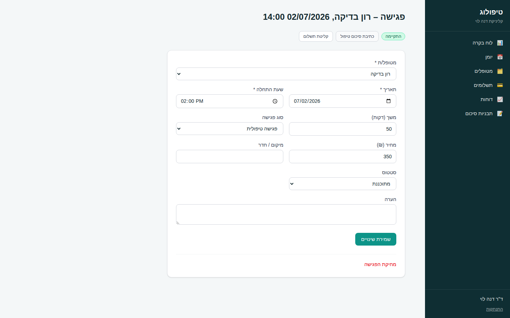
כל הסיכומים נשמרים בתיק המטופל בסדר כרונולוגי יורד. ניתן למחוק סיכום בלחיצה על מחיקה שבפינת הסיכום.
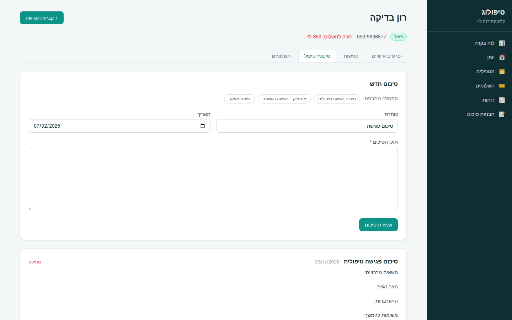
בתפריט בחרו תבניות סיכום. כאן יוצרים ועורכים "שלדים" של סיכומים – למשל תבנית אינטייק, תבנית סיכום פגישה שוטפת או שיחת מעקב. כל תבנית כוללת שם ותוכן חופשי עם שדות קבועים (למשל: "נושאים מרכזיים:", "התערבויות:", "משימות להמשך:").
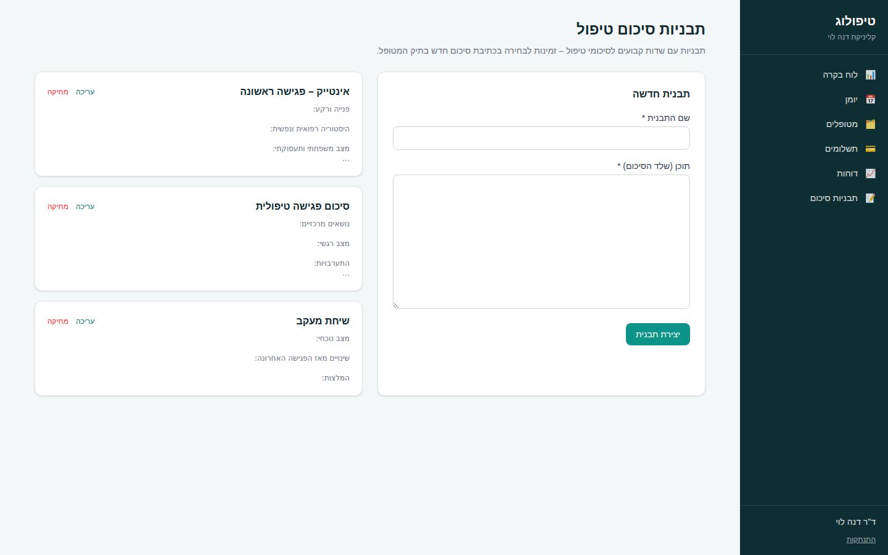
בלשונית מסמכים שבתיק המטופל אפשר לשמור כל קובץ הקשור לטיפול: הפניות, תוצאות בדיקות, טפסי הסכמה, סיכומים סרוקים ועוד.
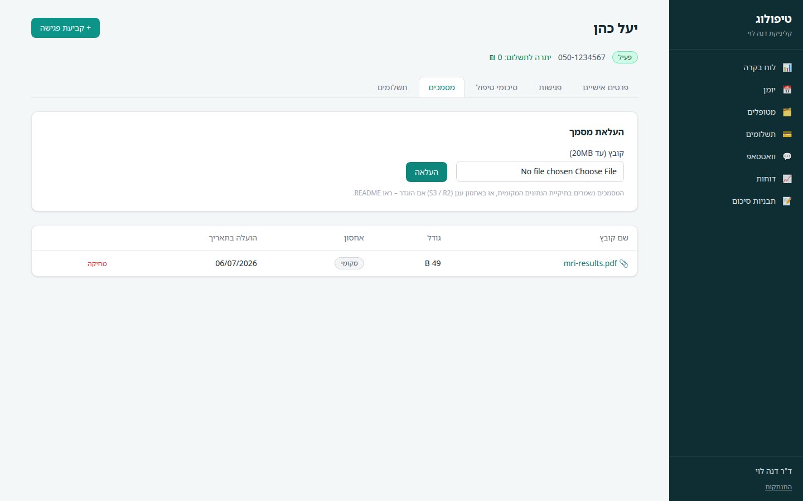
כברירת מחדל הקבצים נשמרים במחשב שמריץ את המערכת (תיקיית data/uploads). ניתן להגדיר אחסון ענן תואם S3 – למשל Amazon S3 או Cloudflare R2 – ואז קבצים חדשים יישמרו בענן ויסומנו ברשימה בתגית "ענן". הגדרת הענן מתוארת במדריך ההתקנה ובקובץ README.
יתרה לתשלום = סך מחירי הפגישות שהתקיימו − סך התשלומים שנקלטו. היתרה מוצגת בראש תיק המטופל ובלשונית התשלומים.
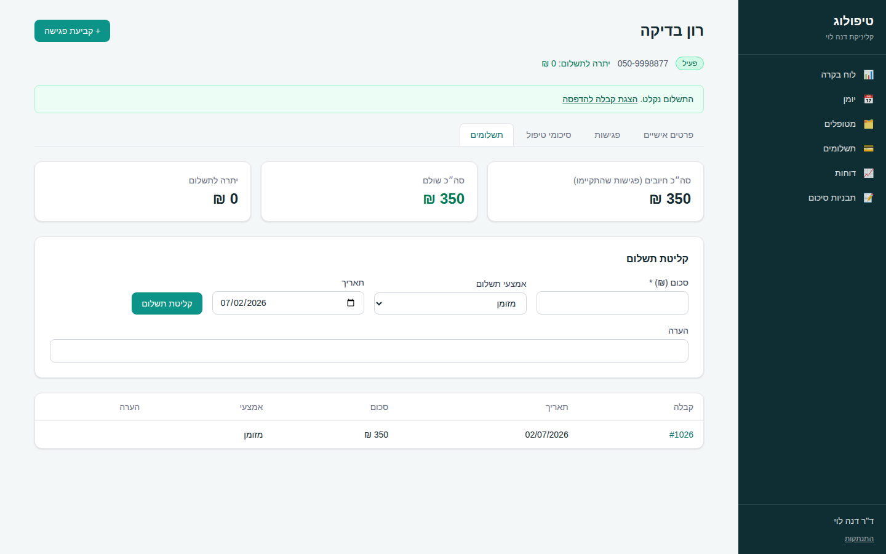
לחיצה על מספר קבלה (בתיק המטופל או בעמוד התשלומים) פותחת קבלה מעוצבת עם פרטי הקליניקה, המטופל, הסכום ואמצעי התשלום. כפתור 🖨️ הדפסת קבלה פותח את חלון ההדפסה של הדפדפן (ניתן גם לשמור כ-PDF).
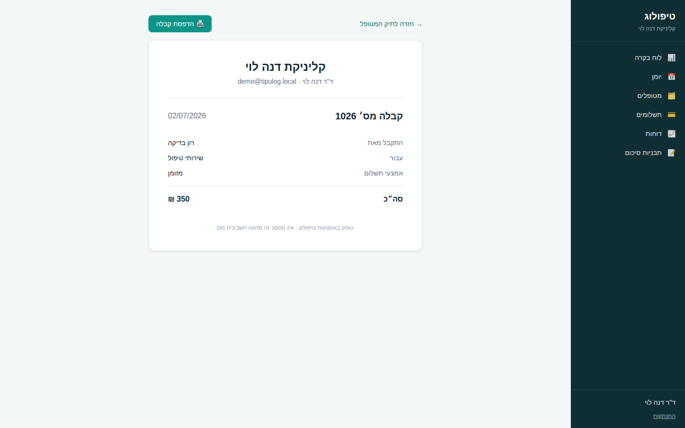
בתפריט בחרו תשלומים לצפייה בכל התשלומים מכל המטופלים, עם סינון לפי טווח תאריכים וסך גבייה לתקופה.
בתפריט בחרו דוחות. שני דוחות זמינים, בכל אחד ניתן לבחור טווח תאריכים וללחוץ הצגה:
כל הפגישות בטווח שנבחר, עם סיכומי-על: סך פגישות, כמה התקיימו, כמה בוטלו או לא הגיעו, וסך ההכנסות מהפגישות שהתקיימו.
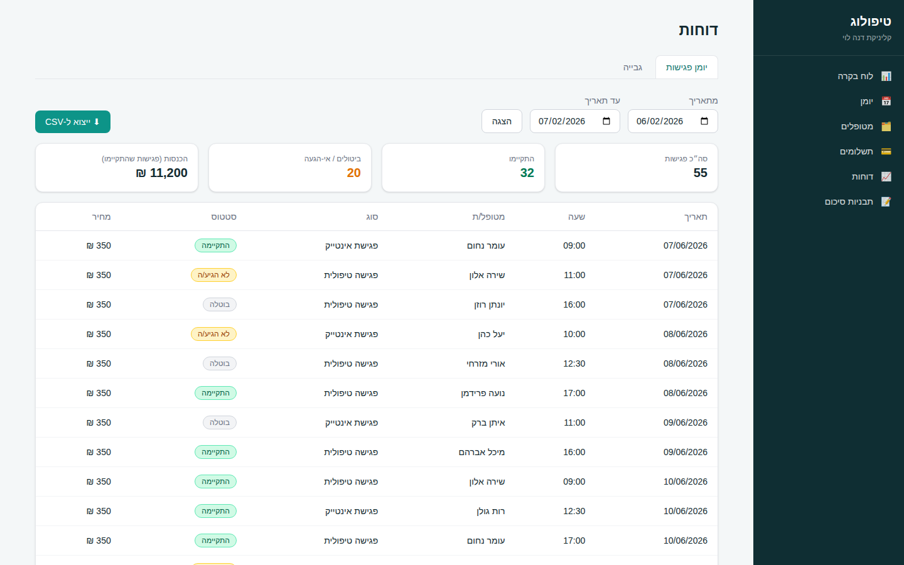
כל התשלומים שנקלטו בטווח שנבחר, לפי קבלות, עם סך הגבייה לתקופה.
כפתור ⬇ ייצוא ל-CSV מוריד את הדוח הנוכחי כקובץ CSV הנפתח כראוי באקסל, כולל עברית. שם הקובץ כולל את סוג הדוח וטווח התאריכים.
המערכת כוללת בוט וואטסאפ שמאפשר למטופלים לנהל תורים בעצמם, בלי טלפונים ובלי מזכירה. הבוט מזהה את המטופל לפי מספר הטלפון שבתיק, ומציע תורים פנויים בלבד – לפי שעות הפעילות שהגדרתם והיומן בפועל.
| פעולה | איך |
|---|---|
| קביעת תור חדש | שולחים "שלום" → משיבים 1 → בוחרים תור מהרשימה המוצעת. |
| צפייה בתורים קרובים | משיבים 2 בתפריט. |
| ביטול תור | משיבים 3 ובוחרים את התור לביטול. |
פגישות שנקבעו בוואטסאפ נכנסות ליומן כרגיל, עם סימון "נקבע בוואטסאפ" בעמוד הפגישה.
בתפריט בחרו וואטסאפ. בעמוד ההגדרות קובעים:
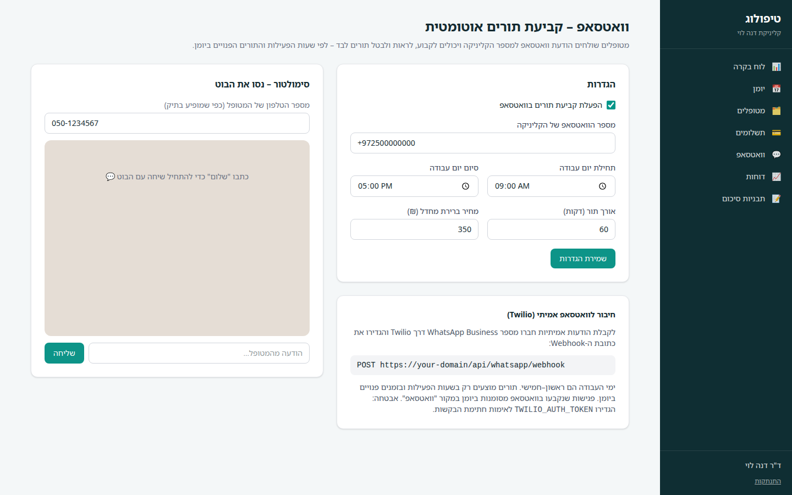
בצד העמוד יש סימולטור צ׳אט – אפשר להתכתב עם הבוט בדיוק כפי שמטופל היה עושה, כדי לבדוק את החוויה לפני חיבור לוואטסאפ אמיתי. הזינו את מספר הטלפון של מטופל קיים וכתבו "שלום".
לקבלת הודעות אמיתיות יש לחבר מספר WhatsApp Business דרך ספק כמו Twilio ולהפנות את ה-Webhook של ההודעות הנכנסות לכתובת המערכת – ההנחיות המלאות בעמוד ההגדרות ובמדריך ההתקנה.
תיק מטופל → לשונית פרטים אישיים → שדה "סטטוס" → לא פעיל → שמירת שינויים. מטופל לא פעיל אינו מופיע ברשימת הבחירה בקביעת פגישה חדשה.
פתחו את הפגישה מהיומן ולחצו מחיקת הפגישה בתחתית העמוד. אם לפגישה כבר נקשרו סיכום או תשלום – הם יישארו בתיק המטופל.
"גבייה החודש" סוכמת תשלומים לפי תאריך התשלום שהוזן, לא לפי תאריך הפגישה. "יתרות פתוחות" נובעות מפגישות שסומנו "התקיימה" וטרם שולמו במלואן.
בגרסה הנוכחית לכל קליניקה חשבון מטפל אחד. ניהול צוות והרשאות מתוכנן לגרסה עתידית.
כל הנתונים נשמרים בקובץ אחד – ראו פרק "גיבוי" במדריך ההתקנה.